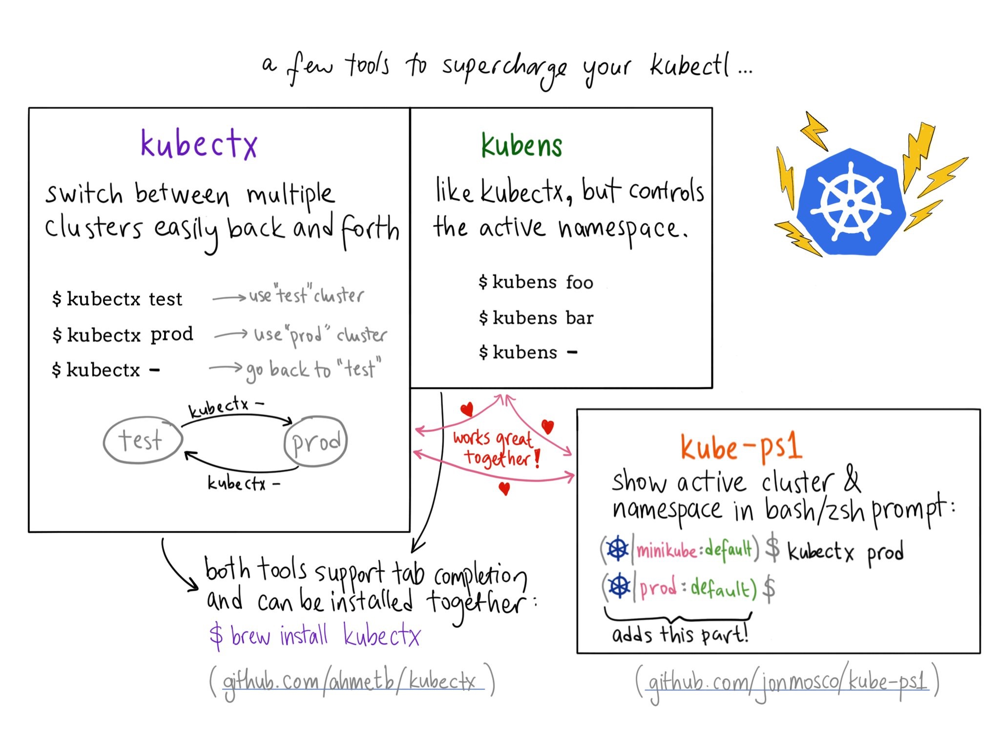
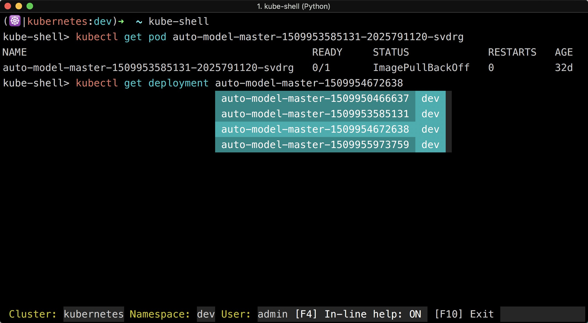

Kubectl命令
Table of Contents
Kubernetes提供的kubectl命令是与集群交互最直接的方式，kubectl命令参考图如下：

Kubectl的子命令主要分为8个类别：
- 基础命令（初学者都会使用的）
- 基础命令（中级）
- 部署命令
- 集群管理命令
- 故障排查和调试命令
- 高级命令
- 设置命令
- 其他命令
熟悉这些命令有助于操作和管理kubernetes集群
配置
命令行提示

- kubectx：用于切换kubernetes context
- kube-ps1：为命令行终端增加$PROMPT字段
kube-shell：交互式带命令提示的kubectl终端
全部配置完成后的kubectl终端如下图所示：

kube-shell
开源项目kube-shell可以为kubectl提供自动的命令提示和补全，使用起来特别方便
Kube-shell有以下特性：
- 命令提示，给出命令的使用说明
- 自动补全，列出可选命令并可以通过tab键自动补全，支持模糊搜索
- 高亮
- 使用tab键可以列出可选的对象
vim模式
安装：
pip install kube-shell --user -U
身份认证
Kubernetes中存在三种安全认证方式：
- CA证书：API server与其它几个组件之间都是通过这种方式认证的
- HTTP base：在API server的启动参数中指定的–token-auth-file=/etc/kubernetes/token.csv文件中明文的用户、组、密码和UID配置
- bearer token：HTTP请求中header中传递的Autorization:Bearer token，这个token通常保存在创建角色跟serviceaccount绑定的时候生成的secret中
kubectl通过读取 kubeconfig 文件中的配置信息在向API server发送请求的时候同时传递认证信息，同时支持CA证书和bearer token的认证方式
命令自动补全
建议使用oh-my-zsh，增加对kubectl命令自动补全支持
修改~/.zshrc文件，增加如下两行：
plugins=(kubectl) source <(kubectl completion zsh)
保存后重启终端即可生效
docker用户过渡到kubectl命令行
kubectl，被设计成 docker-cli 用户所熟悉的样子，但是它们之间又存在一些必要的差异。接下来将展示每个 docker 子命令和 kubectl 与其等效的命令
在使用 kubernetes 集群的时候，docker 命令通常情况是不需要用到的，只有在调试程序或者容器的时候用到
基本上使用 kubectl 命令即可，所以在操作 kubernetes 的时候抛弃原先使用 docker 时的一些观念
docker run
如何运行一个 nginx Deployment 并将其暴露出来？ 查看 kubectl run
使用 docker 命令：
$ docker run -d --restart=always -e DOMAIN=cluster --name nginx-app -p 80:80 nginx a9ec34d9878748d2f33dc20cb25c714ff21da8d40558b45bfaec9955859075d0 $ docker ps CONTAINER ID IMAGE COMMAND CREATED STATUS PORTS NAMES a9ec34d98787 nginx "nginx -g 'daemon of 2 seconds ago Up 2 seconds 0.0.0.0:80->80/tcp, 443/tcp nginx-app
使用 kubectl 命令：
# start the pod running nginx $ kubectl run --image=nginx nginx-app --port=80 --env="DOMAIN=cluster" deployment "nginx-app" created
使用kubectl run 命令将创建一个名为 "nginx-app" 的 Deployment，这将保证有 N 个运行 nginx 的 pod（N 代表 spec 中声明的 replica 数，默认为 1）
如果您运行的是老版本，将会创建一个 replication controller
如果想沿用旧的行为，使用 --generation=run/v1 参数，这样就会创建 replication controller
接下来创建一个 service，使用 selector 匹配具有相应的 selector 的 Deployment：
# expose a port through with a service $ kubectl expose deployment nginx-app --port=80 --name=nginx-http service "nginx-http" exposed
默认情况下镜像会在后台运行，与docker run -d … 类似，如果想在前台运行，使用：
kubectl run [-i] [--tty] --attach <name> --image=<image>
与 docker run … 不同的是，如果指定了 –attach ，将连接到 stdin，stdout 和 stderr，而不能控制具体连接到哪个输出流（docker -a …）。
因为使用 Deployment 启动了容器，如果终止了连接到的进程（例如 ctrl-c），容器将会重启，这跟 docker run -it不同
如果销毁该 Deployment（和它的 pod），必须需要运行 kubectl delete deployment <name>
docker ps
如何列出哪些正在运行？查看 kubectl get
使用 docker 命令：
$ docker ps
CONTAINER ID IMAGE COMMAND CREATED STATUS PORTS NAMES
a9ec34d98787 nginx "nginx -g 'daemon of About an hour ago Up About an hour 0.0.0.0:80->80/tcp, 443/tcp nginx-app
使用 kubectl 命令：
$ kubectl get po NAME READY STATUS RESTARTS AGE nginx-app-5jyvm 1/1 Running 0 1h
docker attach
如何连接到已经运行在容器中的进程？查看 kubectl attach
使用 docker 命令：
$ docker ps CONTAINER ID IMAGE COMMAND CREATED STATUS PORTS NAMES a9ec34d98787 nginx "nginx -g 'daemon of 8 minutes ago Up 8 minutes 0.0.0.0:80->80/tcp, 443/tcp nginx-app $ docker attach a9ec34d98787 ...
使用 kubectl 命令：
$ kubectl get pods NAME READY STATUS RESTARTS AGE nginx-app-5jyvm 1/1 Running 0 10m $ kubectl attach -it nginx-app-5jyvm
docker exec
如何在容器中执行命令？查看 kubectl exec
使用 docker 命令：
$ docker ps CONTAINER ID IMAGE COMMAND CREATED STATUS PORTS NAMES a9ec34d98787 nginx "nginx -g 'daemon of 8 minutes ago Up 8 minutes 0.0.0.0:80->80/tcp, 443/tcp nginx-app $ docker exec a9ec34d98787 cat /etc/hostname a9ec34d98787
使用 kubectl 命令：
$ kubectl get po NAME READY STATUS RESTARTS AGE nginx-app-5jyvm 1/1 Running 0 10m $ kubectl exec nginx-app-5jyvm -- cat /etc/hostname nginx-app-5jyvm
执行交互式命令怎么办？
使用 docker 命令：
$ docker exec -ti a9ec34d98787 /bin/sh # exit
使用 kubectl 命令：
$ kubectl exec -ti nginx-app-5jyvm -- /bin/sh # exit
更多信息请查看 获取运行中容器的 Shell 环境 https://kubernetes.io/docs/tasks/debug-application-cluster/get-shell-running-container/
docker logs
如何查看运行中进程的 stdout/stderr？查看 kubectl logs
使用 docker 命令：
$ docker logs -f a9e 192.168.9.1 - - [14/Jul/2015:01:04:02 +0000] "GET / HTTP/1.1" 200 612 "-" "curl/7.35.0" "-" 192.168.9.1 - - [14/Jul/2015:01:04:03 +0000] "GET / HTTP/1.1" 200 612 "-" "curl/7.35.0" "-"
使用 kubectl 命令：
$ kubectl logs -f nginx-app-zibvs 10.240.63.110 - - [14/Jul/2015:01:09:01 +0000] "GET / HTTP/1.1" 200 612 "-" "curl/7.26.0" "-" 10.240.63.110 - - [14/Jul/2015:01:09:02 +0000] "GET / HTTP/1.1" 200 612 "-" "curl/7.26.0" "-"
默认情况下如果 pod 中的进程退出 pod 也不会终止，相反它将会重启该进程
这类似于 docker run 时的 --restart=always 选项， 这是和容器之间的主要差别
在 docker 中，进程的每个调用的输出都是被连接起来的，但是对于 kubernetes，每个调用都是分开的
要查看以前在 kubernetes 中执行的输出，请执行以下操作：
$ kubectl logs --previous nginx-app-zibvs 10.240.63.110 - - [14/Jul/2015:01:09:01 +0000] "GET / HTTP/1.1" 200 612 "-" "curl/7.26.0" "-" 10.240.63.110 - - [14/Jul/2015:01:09:02 +0000] "GET / HTTP/1.1" 200 612 "-" "curl/7.26.0" "-"
docker stop 和 docker rm
如何停止和删除运行中的进程？查看 kubectl delete
使用 docker 命令：
$ docker ps CONTAINER ID IMAGE COMMAND CREATED STATUS PORTS NAMES a9ec34d98787 nginx "nginx -g 'daemon of 22 hours ago Up 22 hours 0.0.0.0:80->80/tcp, 443/tcp nginx-app $ docker stop a9ec34d98787 a9ec34d98787 $ docker rm a9ec34d98787 a9ec34d98787
使用 kubectl 命令：
$ kubectl get deployment nginx-app NAME DESIRED CURRENT UP-TO-DATE AVAILABLE AGE nginx-app 1 1 1 1 2m $ kubectl get po -l run=nginx-app NAME READY STATUS RESTARTS AGE nginx-app-2883164633-aklf7 1/1 Running 0 2m $ kubectl delete deployment nginx-app deployment "nginx-app" deleted $ kubectl get po -l run=nginx-app # Return nothing
请注意，不直接删除 pod
使用 kubectl 命令，要删除拥有该 pod 的 Deployment。如果直接删除pod，Deployment 将会重新创建该 pod
docker login
在 kubectl 中没有对 docker login 的直接模拟
如果有兴趣在私有镜像仓库中使用 Kubernetes，请参阅 使用私有镜像仓库 https://kubernetes.io/docs/concepts/containers/images/#using-a-private-registry
docker version
如何查看客户端和服务端的版本？查看 kubectl version
使用 docker 命令：
$ docker version Client version: 1.7.0 Client API version: 1.19 Go version (client): go1.4.2 Git commit (client): 0baf609 OS/Arch (client): linux/amd64 Server version: 1.7.0 Server API version: 1.19 Go version (server): go1.4.2 Git commit (server): 0baf609 OS/Arch (server): linux/amd64
使用 kubectl 命令：
$ kubectl version
Client Version: version.Info{Major:"1", Minor:"6", GitVersion:"v1.6.9+a3d1dfa6f4335", GitCommit:"9b77fed11a9843ce3780f70dd251e92901c43072", GitTreeState:"dirty", BuildDate:"2017-08-29T20:32:58Z", OpenPaasKubernetesVersion:"v1.03.02", GoVersion:"go1.7.5", Compiler:"gc", Platform:"linux/amd64"}
Server Version: version.Info{Major:"1", Minor:"6", GitVersion:"v1.6.9+a3d1dfa6f4335", GitCommit:"9b77fed11a9843ce3780f70dd251e92901c43072", GitTreeState:"dirty", BuildDate:"2017-08-29T20:32:58Z", OpenPaasKubernetesVersion:"v1.03.02", GoVersion:"go1.7.5", Compiler:"gc", Platform:"linux/amd64"}
docker info
如何获取有关环境和配置的各种信息？查看 kubectl cluster-info
使用 docker 命令：
$ docker info Containers: 40 Images: 168 Storage Driver: aufs Root Dir: /usr/local/google/docker/aufs Backing Filesystem: extfs Dirs: 248 Dirperm1 Supported: false Execution Driver: native-0.2 Logging Driver: json-file Kernel Version: 3.13.0-53-generic Operating System: Ubuntu 14.04.2 LTS CPUs: 12 Total Memory: 31.32 GiB Name: k8s-is-fun.mtv.corp.google.com ID: ADUV:GCYR:B3VJ:HMPO:LNPQ:KD5S:YKFQ:76VN:IANZ:7TFV:ZBF4:BYJO WARNING: No swap limit support
使用 kubectl 命令：
$ kubectl cluster-info Kubernetes master is running at https://108.59.85.141 KubeDNS is running at https://108.59.85.141/api/v1/namespaces/kube-system/services/kube-dns/proxy KubeUI is running at https://108.59.85.141/api/v1/namespaces/kube-system/services/kube-ui/proxy Grafana is running at https://108.59.85.141/api/v1/namespaces/kube-system/services/monitoring-grafana/proxy Heapster is running at https://108.59.85.141/api/v1/namespaces/kube-system/services/monitoring-heapster/proxy InfluxDB is running at https://108.59.85.141/api/v1/namespaces/kube-system/services/monitoring-influxdb/proxy
技巧
自动补全
$ source <(kubectl completion bash) # setup autocomplete in bash, bash-completion package should be installed first. $ source <(kubectl completion zsh) # setup autocomplete in zsh
上下文和配置
设置 kubectl 命令交互的 kubernetes 集群并修改配置信息：
$ kubectl config view # 显示合并后的 kubeconfig 配置 # 同时使用多个 kubeconfig 文件并查看合并后的配置 $ KUBECONFIG=~/.kube/config:~/.kube/kubconfig2 kubectl config view # 获取 e2e 用户的密码 $ kubectl config view -o jsonpath='{.users[?(@.name == "e2e")].user.password}' $ kubectl config current-context # 显示当前的上下文 $ kubectl config use-context my-cluster-name # 设置默认上下文为 my-cluster-name # 向 kubeconf 中增加支持基本认证的新集群 $ kubectl config set-credentials kubeuser/foo.kubernetes.com --username=kubeuser --password=kubepassword # 使用指定的用户名和 namespace 设置上下文 $ kubectl config set-context gce --user=cluster-admin --namespace=foo \ && kubectl config use-context gce
创建对象
Kubernetes 的清单文件可以使用 json 或 yaml 格式定义：
$ kubectl create -f ./my-manifest.yaml # 创建资源 $ kubectl create -f ./my1.yaml -f ./my2.yaml # 使用多个文件创建资源 $ kubectl create -f ./dir # 使用目录下的所有清单文件来创建资源 $ kubectl create -f https://git.io/vPieo # 使用 url 来创建资源 $ kubectl run nginx --image=nginx # 启动一个 nginx 实例 $ kubectl explain pods,svc # 获取 pod 和 svc 的文档 # 从 stdin 输入中创建多个 YAML 对象 $ cat <<EOF | kubectl create -f - apiVersion: v1 kind: Pod metadata: name: busybox-sleep spec: containers: - name: busybox image: busybox args: - sleep - "1000000" --- apiVersion: v1 kind: Pod metadata: name: busybox-sleep-less spec: containers: - name: busybox image: busybox args: - sleep - "1000" EOF # 创建包含几个 key 的 Secret $ cat <<EOF | kubectl create -f - apiVersion: v1 kind: Secret metadata: name: mysecret type: Opaque data: password: $(echo "s33msi4" | base64) username: $(echo "jane" | base64) EOF
显示和查找资源
# Get commands with basic output $ kubectl get services # 列出所有 namespace 中的所有 service $ kubectl get pods --all-namespaces # 列出所有 namespace 中的所有 pod $ kubectl get pods -o wide # 列出所有 pod 并显示详细信息 $ kubectl get deployment my-dep # 列出指定 deployment $ kubectl get pods --include-uninitialized # 列出该 namespace 中的所有 pod 包括未初始化的 # 使用详细输出来描述命令 $ kubectl describe nodes my-node $ kubectl describe pods my-pod $ kubectl get services --sort-by=.metadata.name # List Services Sorted by Name # 根据重启次数排序列出 pod $ kubectl get pods --sort-by='.status.containerStatuses[0].restartCount' # 获取所有具有 app=cassandra 的 pod 中的 version 标签 $ kubectl get pods --selector=app=cassandra rc -o \ jsonpath='{.items[*].metadata.labels.version}' # 获取所有节点的 ExternalIP $ kubectl get nodes -o jsonpath='{.items[*].status.addresses[?(@.type=="ExternalIP")].address}' # 列出属于某个 PC 的 Pod 的名字 # “jq”命令用于转换复杂的 jsonpath，参考 https://stedolan.github.io/jq/ $ sel=${$(kubectl get rc my-rc --output=json | jq -j '.spec.selector | to_entries | .[] | "\(.key)=\(.value),"')%?} $ echo $(kubectl get pods --selector=$sel --output=jsonpath={.items..metadata.name}) # 查看哪些节点已就绪 $ JSONPATH='{range .items[*]}{@.metadata.name}:{range @.status.conditions[*]}{@.type}={@.status};{end}{end}' \ && kubectl get nodes -o jsonpath="$JSONPATH" | grep "Ready=True" # 列出当前 Pod 中使用的 Secret $ kubectl get pods -o json | jq '.items[].spec.containers[].env[]?.valueFrom.secretKeyRef.name' | grep -v null | sort | uniq
更新资源
$ kubectl rolling-update frontend-v1 -f frontend-v2.json # 滚动更新 pod frontend-v1 $ kubectl rolling-update frontend-v1 frontend-v2 --image=image:v2 # 更新资源名称并更新镜像 $ kubectl rolling-update frontend --image=image:v2 # 更新 frontend pod 中的镜像 $ kubectl rolling-update frontend-v1 frontend-v2 --rollback # 退出已存在的进行中的滚动更新 $ cat pod.json | kubectl replace -f - # 基于 stdin 输入的 JSON 替换 pod # 强制替换，删除后重新创建资源。会导致服务中断。 $ kubectl replace --force -f ./pod.json # 为 nginx RC 创建服务，启用本地 80 端口连接到容器上的 8000 端口 $ kubectl expose rc nginx --port=80 --target-port=8000 # 更新单容器 pod 的镜像版本（tag）到 v4 $ kubectl get pod mypod -o yaml | sed 's/\(image: myimage\):.*$/\1:v4/' | kubectl replace -f - $ kubectl label pods my-pod new-label=awesome # 添加标签 $ kubectl annotate pods my-pod icon-url=http://goo.gl/XXBTWq # 添加注解 $ kubectl autoscale deployment foo --min=2 --max=10 # 自动扩展 deployment “foo”
修补资源
使用策略合并补丁并修补资源：
$ kubectl patch node k8s-node-1 -p '{"spec":{"unschedulable":true}}' # 部分更新节点 # 更新容器镜像； spec.containers[*].name 是必须的，因为这是合并的关键字 $ kubectl patch pod valid-pod -p '{"spec":{"containers":[{"name":"kubernetes-serve-hostname","image":"new image"}]}}' # 使用具有位置数组的 json 补丁更新容器镜像 $ kubectl patch pod valid-pod --type='json' -p='[{"op": "replace", "path": "/spec/containers/0/image", "value":"new image"}]' # 使用具有位置数组的 json 补丁禁用 deployment 的 livenessProbe $ kubectl patch deployment valid-deployment --type json -p='[{"op": "remove", "path": "/spec/template/spec/containers/0/livenessProbe"}]'
编辑资源
在编辑器中编辑任何 API 资源：
$ kubectl edit svc/docker-registry # 编辑名为 docker-registry 的 service $ KUBE_EDITOR="nano" kubectl edit svc/docker-registry # 使用其它编辑器
Scale 资源
$ kubectl scale --replicas=3 rs/foo # Scale a replicaset named 'foo' to 3 $ kubectl scale --replicas=3 -f foo.yaml # Scale a resource specified in "foo.yaml" to 3 $ kubectl scale --current-replicas=2 --replicas=3 deployment/mysql # If the deployment named mysql's current size is 2, scale mysql to 3 $ kubectl scale --replicas=5 rc/foo rc/bar rc/baz # Scale multiple replication controllers
删除资源
$ kubectl delete -f ./pod.json # 删除 pod.json 文件中定义的类型和名称的 pod $ kubectl delete pod,service baz foo # 删除名为“baz”的 pod 和名为“foo”的 service $ kubectl delete pods,services -l name=myLabel # 删除具有 name=myLabel 标签的 pod 和 serivce $ kubectl delete pods,services -l name=myLabel --include-uninitialized # 删除具有 name=myLabel 标签的 pod 和 service，包括尚未初始化的 $ kubectl -n my-ns delete po,svc --all # 删除 my-ns namespace 下的所有 pod 和 serivce，包括尚未初始化的
与运行中的 Pod 交互
$ kubectl logs my-pod # dump 输出 pod 的日志（stdout） $ kubectl logs my-pod -c my-container # dump 输出 pod 中容器的日志（stdout，pod 中有多个容器的情况下使用） $ kubectl logs -f my-pod # 流式输出 pod 的日志（stdout） $ kubectl logs -f my-pod -c my-container # 流式输出 pod 中容器的日志（stdout，pod 中有多个容器的情况下使用） $ kubectl run -i --tty busybox --image=busybox -- sh # 交互式 shell 的方式运行 pod $ kubectl attach my-pod -i # 连接到运行中的容器 $ kubectl port-forward my-pod 5000:6000 # 转发 pod 中的 6000 端口到本地的 5000 端口 $ kubectl exec my-pod -- ls / # 在已存在的容器中执行命令（只有一个容器的情况下） $ kubectl exec my-pod -c my-container -- ls / # 在已存在的容器中执行命令（pod 中有多个容器的情况下） $ kubectl top pod POD_NAME --containers # 显示指定 pod 和容器的指标度量
与节点和集群交互
$ kubectl cordon my-node # 标记 my-node 不可调度 $ kubectl drain my-node # 清空 my-node 以待维护 $ kubectl uncordon my-node # 标记 my-node 可调度 $ kubectl top node my-node # 显示 my-node 的指标度量 $ kubectl cluster-info # 显示 master 和服务的地址 $ kubectl cluster-info dump # 将当前集群状态输出到 stdout $ kubectl cluster-info dump --output-directory=/path/to/cluster-state # 将当前集群状态输出到 /path/to/cluster-state # 如果该键和影响的污点（taint）已存在，则使用指定的值替换 $ kubectl taint nodes foo dedicated=special-user:NoSchedule
资源类型
| 资源类型 | 缩写别名 |
| clusters | |
| componentstatuses | cs |
| configmaps | cm |
| daemonsets | ds |
| deployments | deploy |
| endpoints | ep |
| event | ev |
| horizontalpodautoscalers | hpa |
| ingresses | ing |
| jobs | |
| limitranges | limits |
| namespaces | ns |
| networkpolicies | |
| nodes | no |
| statefulsets | |
| persistentvolumeclaims | pvc |
| persistentvolumes | pv |
| pods | po |
| podsecuritypolicies | psp |
| podtemplates | |
| replicasets | rs |
| replicationcontrollers | rc |
| resourcequotas | quota |
| cronjob | |
| secrets | |
| serviceaccount | sa |
| services | svc |
| storageclasses | |
| thirdpartyresources |
格式化输出
要以特定的格式向终端窗口输出详细信息，可以在 kubectl 命令中添加 -o 或者 -output 标志：
| 输出格式 | 描述 |
| -o=custom-columns=<spec> | 使用逗号分隔的自定义列列表打印表格 |
| -o=custom-columns-file=<filename> | 使用 文件中的自定义列模板打印表格 |
| -o=json | 输出 JSON 格式的 API 对象 |
| -o=jsonpath=<template> | 打印 jsonpath 表达式中定义的字段 |
| -o=jsonpath-file=<filename> | 打印由 文件中的 jsonpath 表达式定义的字段 |
| -o=name | 仅打印资源名称 |
| -o=wide | 以纯文本格式输出任何附加信息，对于 Pod ，包含节点名称 |
| -o=yaml | 输出 YAML 格式的 API 对象 |